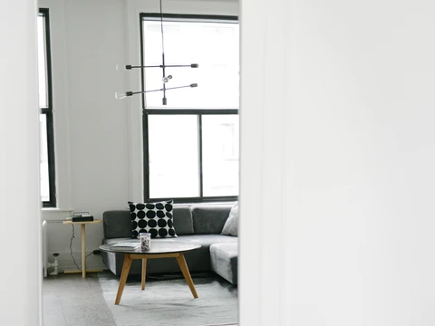

Админ
4 дек. 2022 г. 1 мин.
Дизайн для жизни
те подзаголовок поста: одно-два предложения, которые кратко передают содержание поста и побуждают продолжить чтение. Это текст поста....
0 просмотров
0 комментариев
3